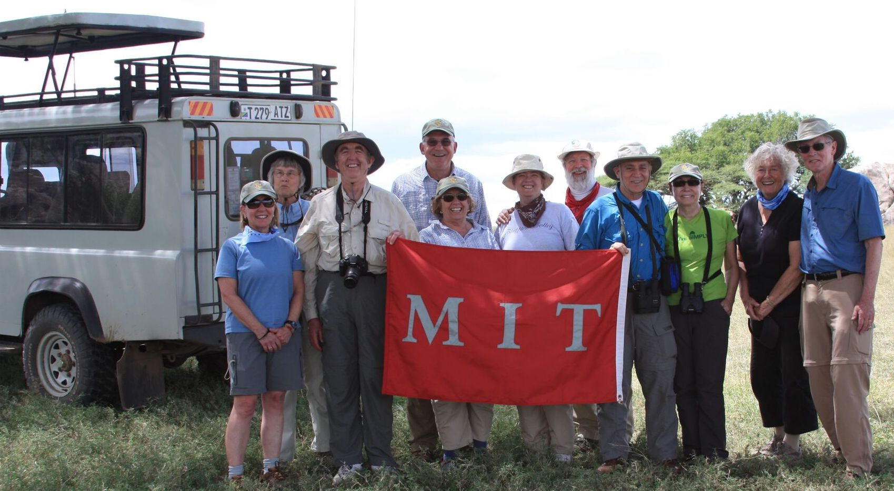
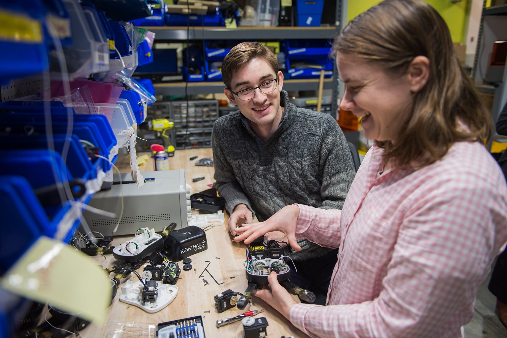
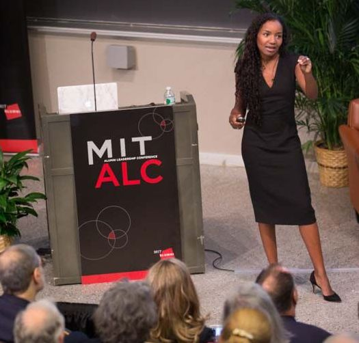

MIT’s alumni — entrepreneurs, researchers, policymakers, and above all, leaders — have helped to shape the world we know today. From 3-D printing to bionic prostheses, many of the products and services that define the modern world have sprung from the minds and hands of MIT’s brilliant alumni community.
MIT’s nearly 145,000 alumni represent one of the most talented, innovative, and networked communities on the planet. Many remain deeply involved in the life of the Institute. They volunteer, serve on boards, head up regional alumni clubs, and generously support MIT’s students, faculty, and staff. As individuals, their contributions are extraordinary. As a community, their impact is infinite.
Get Involved
Join a club. Start a group. Make an annual gift. Attend an event. MIT draws great strength from its graduates’ ongoing engagement — with each other and with the Institute. Our alumni can always find community at MIT, no matter where in the world they are.
Top resources
01. MIT Alumni Association
02. Alumni Directory
03. Alumni Career Resources
04. Lifelong Learning
05. Give to MIT

An MIT Alumni Travel Program trip to Tanzania
MIT Alumni News
In their communities and their professions, locally and around the globe, MIT’s alumni are vital to our vision of making a better world. Through MIT News, the Alumni Association’s Slice of MIT blog, Resource Development’s Spectrum, and MIT News in Technology Review, you can keep up with our graduates’ remarkable impact around the globe.
Top resources
01. Slice of MIT Blog
02. MIT News Office
03. MIT News in Technology Review
04. Spectrum

a. Alum-to-student mentoring in action

b. Presenting at the annual Alumni Leadership Conference (ALC)